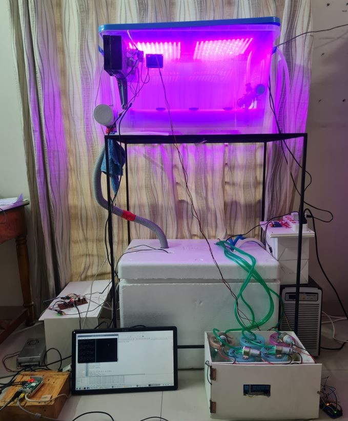
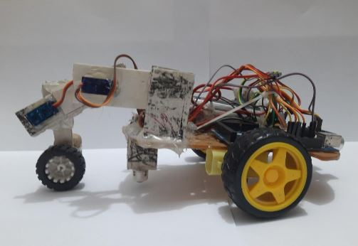

Ph.D. Student, Computer Science, Texas State University
I study vision-language models, robotic manipulation, autonomous navigation,
and intelligent sensing for reliable robotic systems. I am advised by
Dr. Tsz-Chiu Au.
Our paper on assessing vision-language models for failure detection in robotic manipulation is in press at IEEE Pulse, 2026.
I received the Best Poster Award at the 2nd Annual IEEE LSS EMB Workshop on AI and Healthcare, 2025.
I placed 2nd in the Texas State University Capture The Flag competition conducted by EC-Council, 2025.
I joined Texas State University as a Ph.D. student and Graduate Research Assistant in August 2025.
Our hydroponics system paper is under review in Smart Agricultural Technology.
Research Interests
My current work explores how vision-language models can support robotics,
especially failure detection and recovery in manipulation. I benchmark models
ranging from edge-deployable systems such as Moondream2 and SmolVLM to larger
reasoning models such as Qwen-2-VL 7B and Florence-2.
More broadly, I am interested in robotic perception, autonomous navigation and
exploration, multimodal sensing, embedded intelligence, and resilient physical AI
systems that can operate under noisy real-world conditions.
Publications
J.1
MD Sameer Iqbal Chowdhury and Tsz-Chiu Au. 2026.
Assessing Vision-Language Models for Failure Detection in Robotic Manipulation.IEEE Pulse. DOI:
10.1109/MPULS.2026.3659245.
In press.
S.1
MD Sameer Iqbal Chowdhury, Mikdam-Al-Maad Ronoue, Md Asaduzzaman, and Lafifa Jamal. 2024.
Design of an IoT-enabled Scalable Closed Hydroponics System with Intelligent Parameter Control and Persistent Sensing Error Resilience.Smart Agricultural Technology. Under review. DOI:
10.2139/ssrn.5011949.
C.1
Ipshita Ahmed Moon, Humayra Rashid, Safayat Hasan, MD Sameer Iqbal Chowdhury, Shifat-E-Arman, and Lafifa Jamal. 2024.
Exploring the Efficacy of NAO Robot as a Language Instructor.Proceedings of the 10th International Conference on Robotics and Artificial Intelligence.
DOI:
10.1145/3728985.3729006.
Equal contribution.
Selected Projects

IoT-enabled Scalable Closed Hydroponics System
Designed and implemented an automated hydroponics system with pH, EC,
CO2, humidity, and temperature monitoring. The system used Arduino-based
nodes, a web dashboard, live monitoring, XGBoost-based control decisions,
and a persistent sensing error-resilience algorithm.
The project received an ICT Innovation Fund grant from Bangladesh's ICT
Division, where I served as Co-PI. Experiments showed a 78-288% improvement
in fresh mass yield compared with conventional techniques.

2-DOF Single Claw Crawler Bot using Q-learning
Built a two degree-of-freedom crawler robot and implemented Q-learning
with epsilon-greedy exploration to optimize servo-angle sequences for
maximum displacement.
Teaching
Doctoral Instructional Assistant, Texas State University,
CS 2308: Foundations of Computer Science II, August 2025-present.
I curate and grade assignments, proctor examinations, and provide office-hour
support for two course sections with a combined cohort of 140+ students.
Leadership and Service
Chair, IEEE Robotics & Automation Society, University of Dhaka Student Branch Chapter
(January 2023-April 2024). Organized 10+ workshops, interactive sessions, and industry talks for 200+ students.
Mentor, Bangladesh Robot Olympiad
(September 2019-September 2022). Conducted robotics workshops in 15+ high schools and helped organize national rounds for 1000+ participants.
Education
Texas State University, Ph.D. in Computer Science,
August 2025-present. Advisor: Dr. Tsz-Chiu Au.
University of Dhaka, B.Sc. in Robotics and Mechatronics Engineering,
January 2019-March 2024. Thesis: Design of an IoT-enabled Scalable Closed Hydroponics System with Smart Parameter Control.